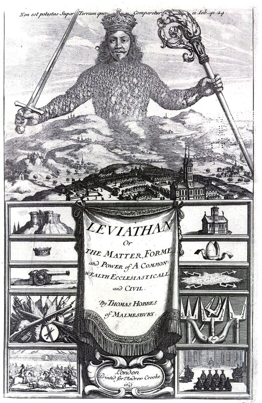

The democratization of knowledge, information, data, ...
Diego Sandoval
Kigali, 2019
The term open-source is extremely broad; it describes a plethora of concepts
including but not limited to technological, social, economic, legal, artistic, and philosophical
aspects.
Source: Wikipedia
The New Instrument. Francis Bacon, 1620.
Knowledge is power
Source: Wikipedia

Leviathan. Thomas Hobbes, 1668.
Knowledge is power
Leviathan. Thomas Hobbes, 1668.
Knowledge is power
Source: Wikipedia

The freedom to run the program as you wish, for any purpose (freedom 0).
The freedom to study how the program works, and change it so it does your computing as you wish (freedom 1). Access to the source code is a precondition for this.
The freedom to redistribute copies so you can help your neighbor (freedom 2).
The freedom to distribute copies of your modified versions to others (freedom 3). By doing this you can give the whole community a chance to benefit from your changes. Access to the source code is a precondition for this.